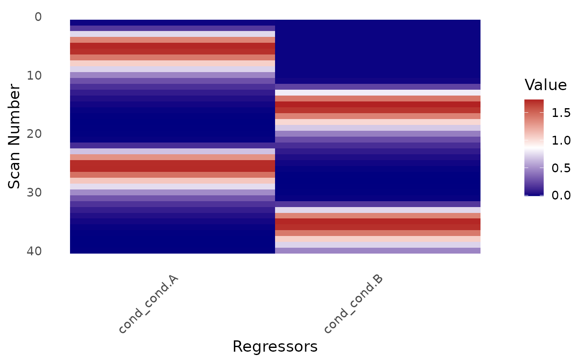

Creates a heatmap visualization of the design matrix for an event_model object.
Usage
# S3 method for class 'event_model'
design_map(
x,
block_separators = TRUE,
rotate_x_text = TRUE,
fill_midpoint = NULL,
fill_limits = NULL,
...
)Arguments
- x
An
event_modelobject.- block_separators
Logical. Whether to draw separators between blocks/runs. Default is TRUE.
- rotate_x_text
Logical. Whether to rotate x-axis labels. Default is TRUE.
- fill_midpoint
Numeric. Midpoint for color scale. If NULL, uses gradient scale.
- fill_limits
Numeric vector of length 2. Limits for fill scale.
- ...
Additional arguments passed to geom_tile.
Examples
des <- data.frame(
onset = c(0, 10, 20, 30),
run = 1,
cond = factor(c("A", "B", "A", "B"))
)
sframe <- fmrihrf::sampling_frame(blocklens = 40, TR = 1)
emod <- event_model(onset ~ hrf(cond), data = des, block = ~run, sampling_frame = sframe)
design_map(emod)
